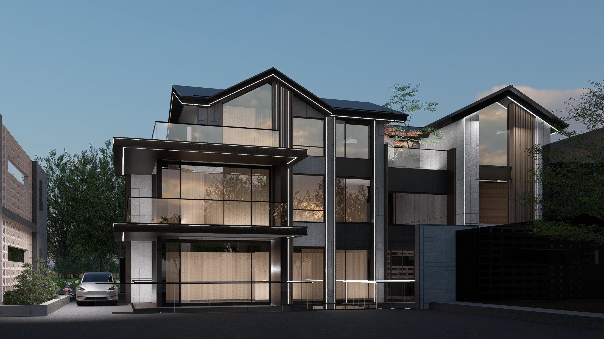
县域建筑实践
真实项目
真实项目
与工具流
用官网式大海报来讲作品集：大图先建立记忆点，再通过滚动、切换、视频和模型入口展示过程。
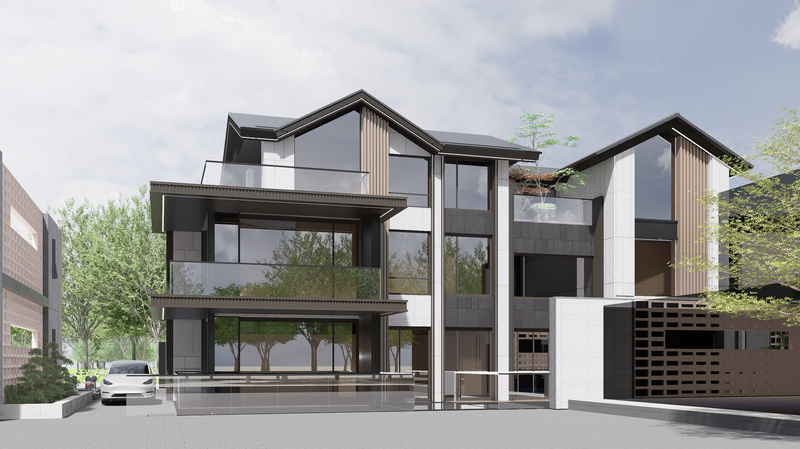
主案一
商业酒店用地
商业酒店用地
改自宅
商业酒店审批、自宅体验、分期建设与后期扩建，在同一个项目里同时处理。
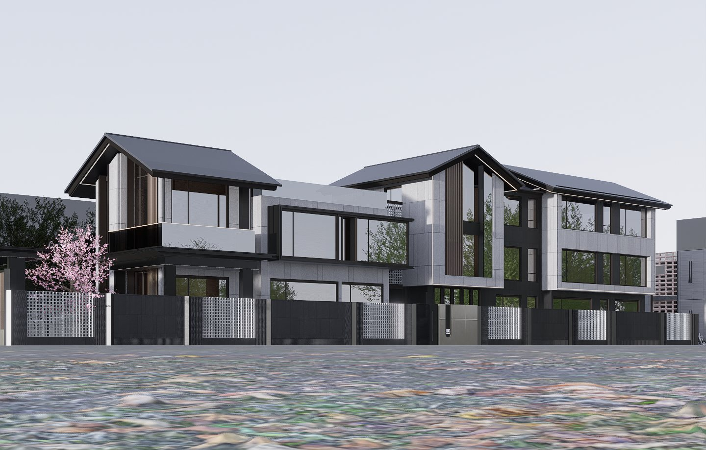
过程证据
不是只放
不是只放
最终效果图
废弃方案、截图、阶段材料可以用网页交互拆开看。静态纸质稿往往很难把这些内容讲清楚。
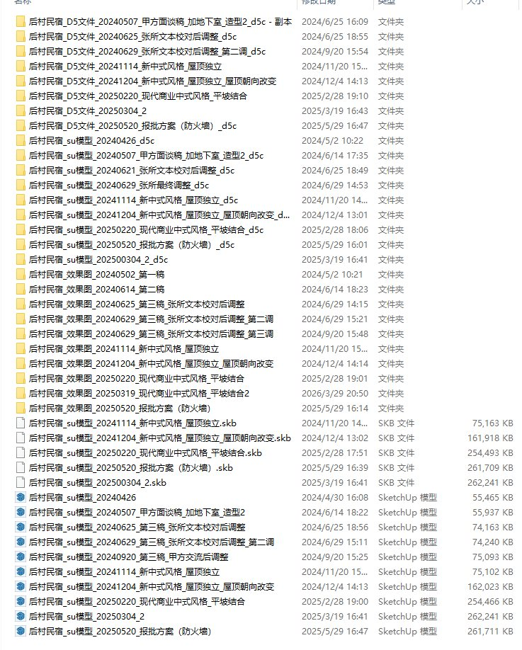
佐证材料 / 清单截图 / 沟通证据
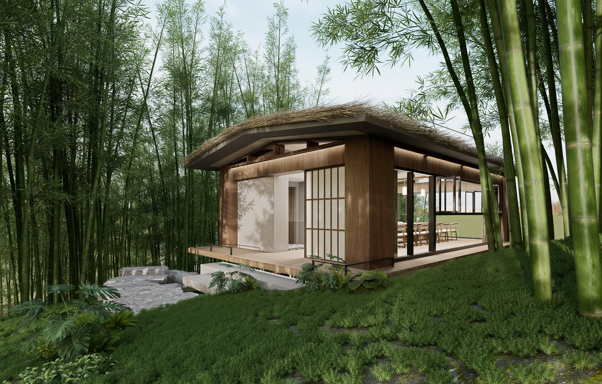
山地庭院
航拍建模
航拍建模
进入设计
复杂山地项目不只是渲染问题，前期场地理解和沟通效率同样重要。
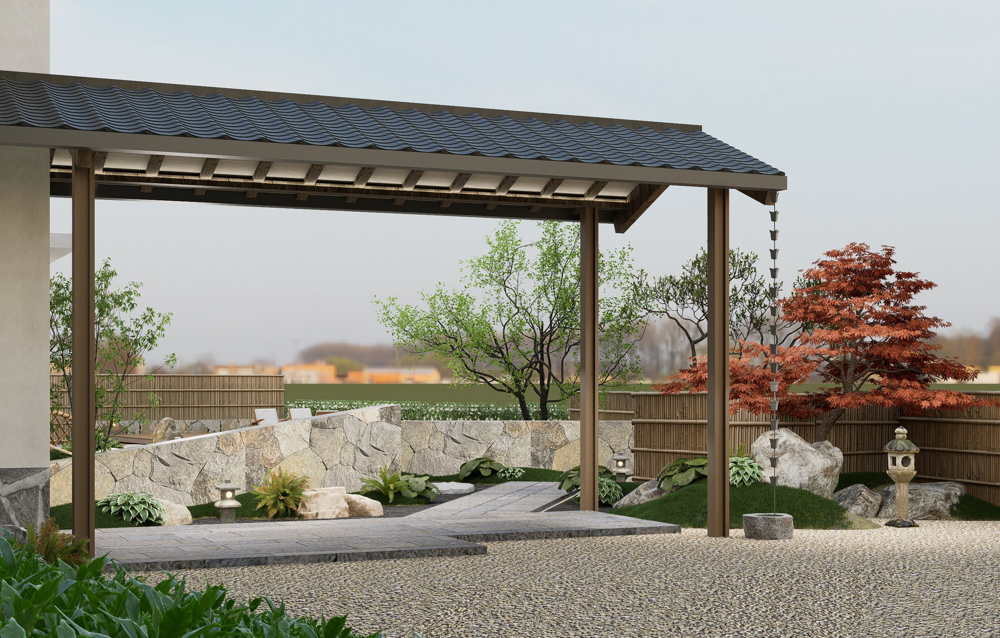
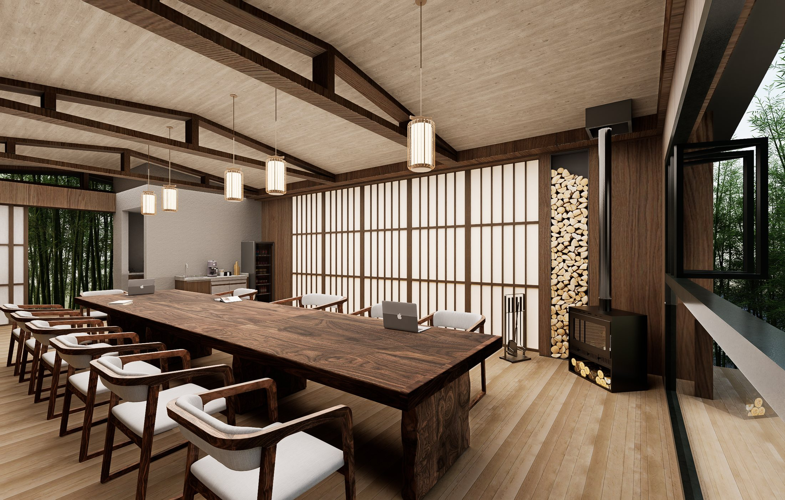
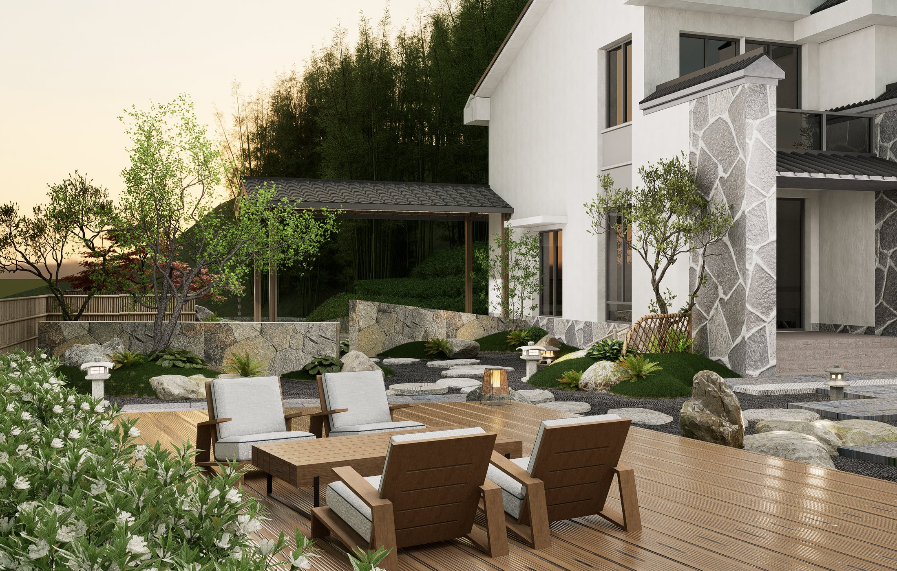
公建 / 投标 / 可研
真实工作语境
真实工作语境
比单张图重要
医疗康养中心、邻里中心投标、兵役服务站可研，适合用网页做成可展开的项目索引。
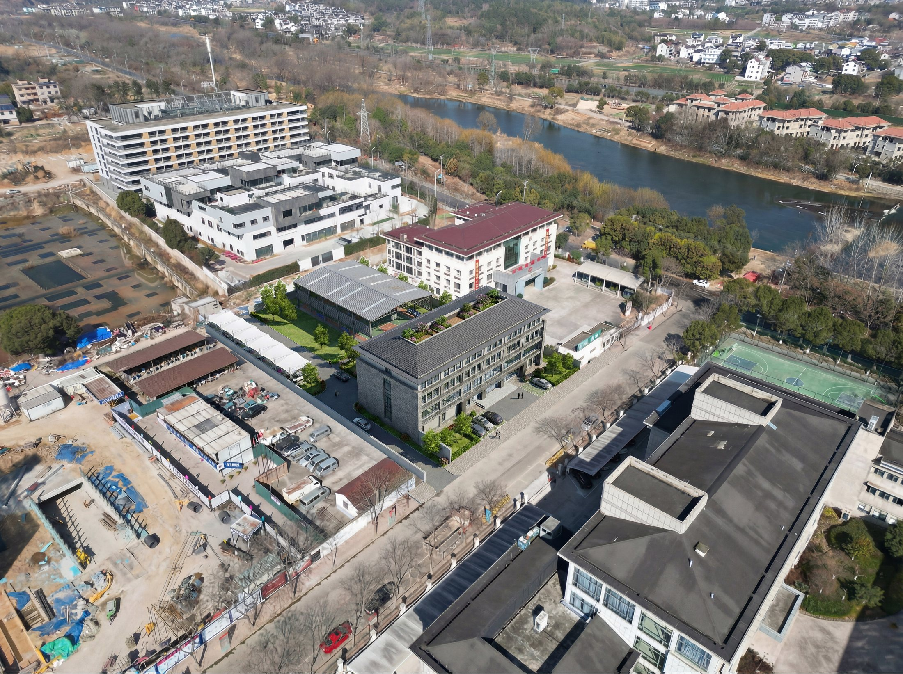
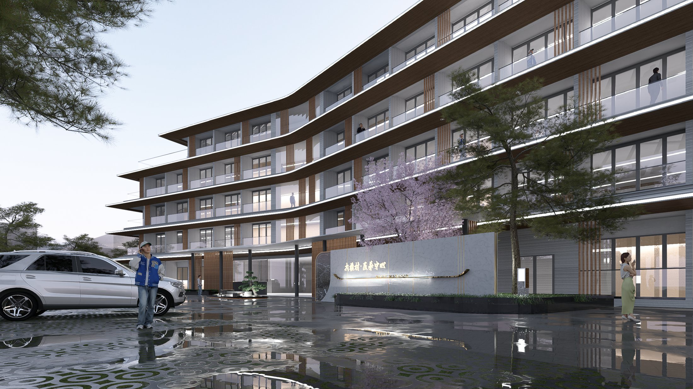
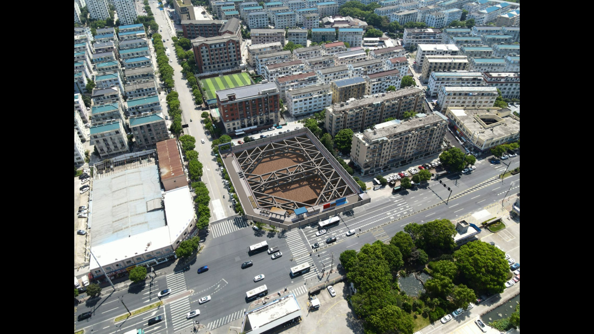
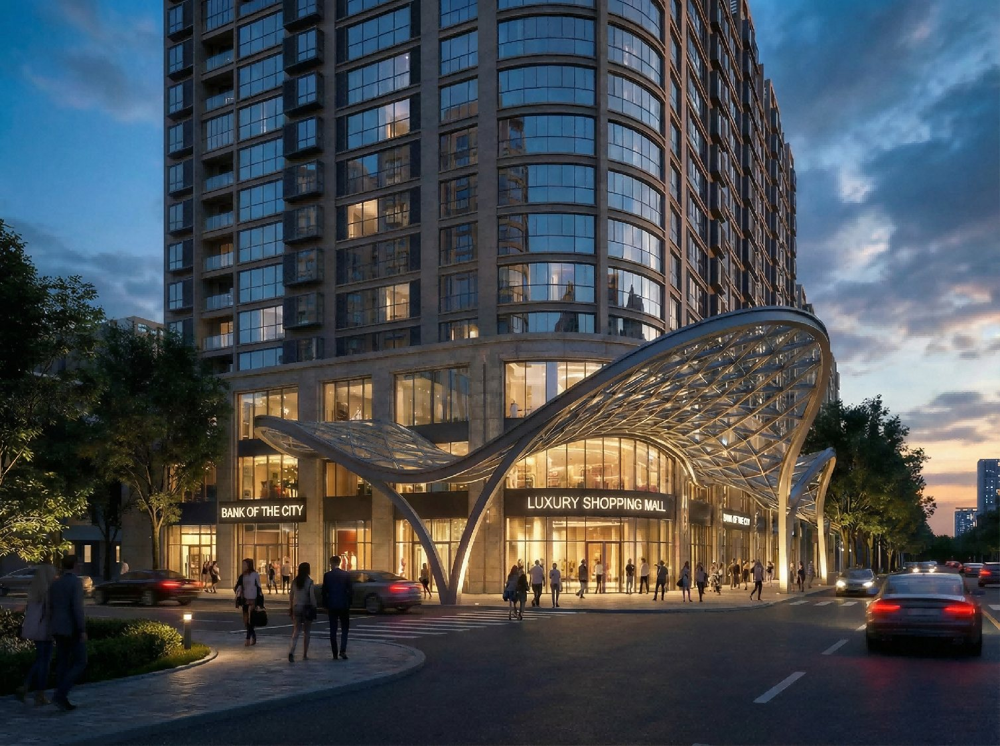
智能表现
从任务
从任务
到可用图
这部分更适合做成动态工作流：条件、风格、批量出图、投标表达，而不是堆几张成图。
主效果 / 最终中标项目
视频预留
短视频开场
短视频开场
替代静态封面
后续你上传航拍、漫游或讲解视频后，这一屏可以变成自动播放的项目开场。
视频占位
可放 5-8 秒循环背景、完整项目视频或模型漫游。建议每个重点项目只放一段短视频，避免页面变重。
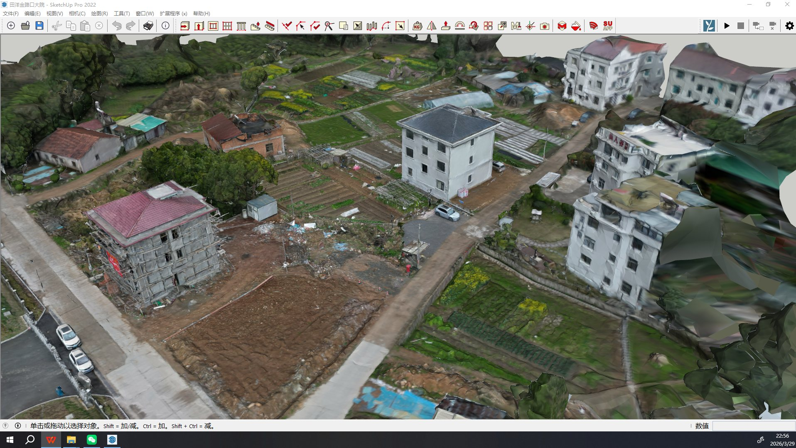
模型设计
航测建模
航测建模
与三维入口
这一屏是网页价值最明显的地方：后续可以接 `.glb`、高斯模型、航拍漫游或交互式场地模型。
模型预留位
现在用动态网格表示，后续替换为可旋转模型或嵌入式高斯场景。